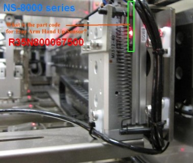
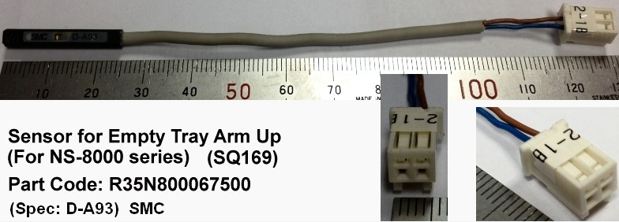

Service History
Subject: After pressed HOME button, Empty Tray Arm Hand up sensor error
Handler Model: NS-8040
Controller: RC520
Date: 21 Feb 2013
Symptom
After pressed HOME button, J0602 Empty Tray Arm Hand up sensor error.


Action
Replaced to new Hand up sensor.
Adjusted sensor position to sensor ON when Empty Tray Arm is at Up position.
Cause
Faulty sensor (R35N800067500) for Empty Tray Arm Hand up.